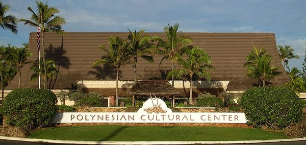

Polynesian Cultural Center
The Polynesian Cultural Center is where visitors learn about the island cultures of Hawaii, Samoa, Tonga, Fiji, Tahiti, Aotearoa and more. Each village has its own food, crafts, dance, and stories shared by people who grew up in those traditions.

Photo: Wikimedia Commons, public domain.